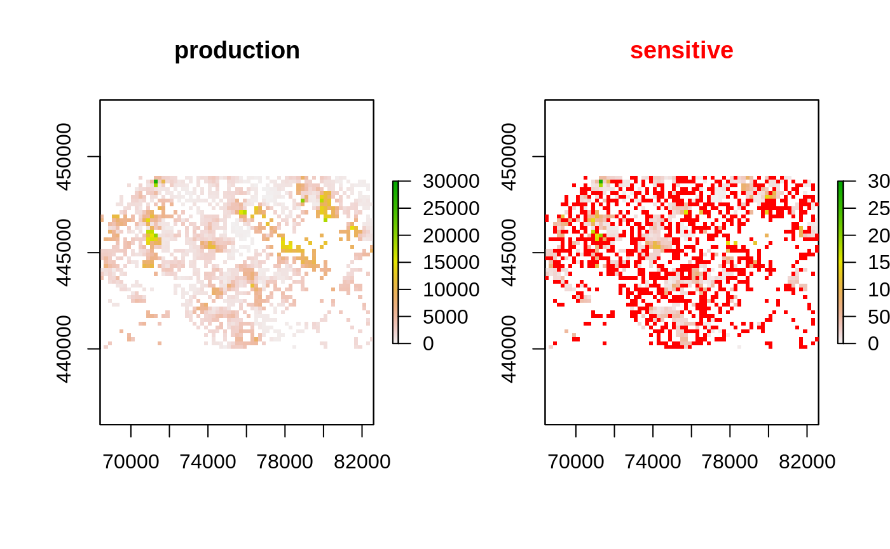
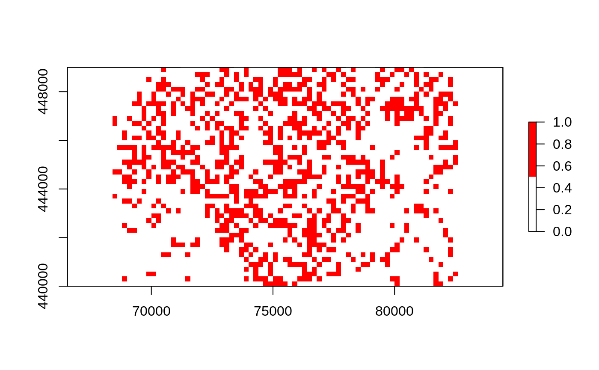
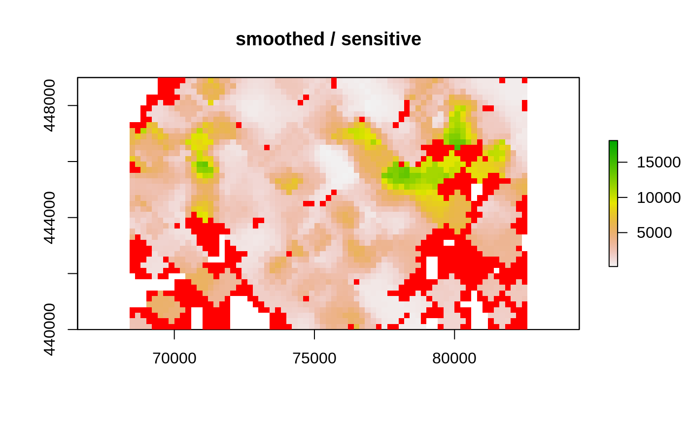
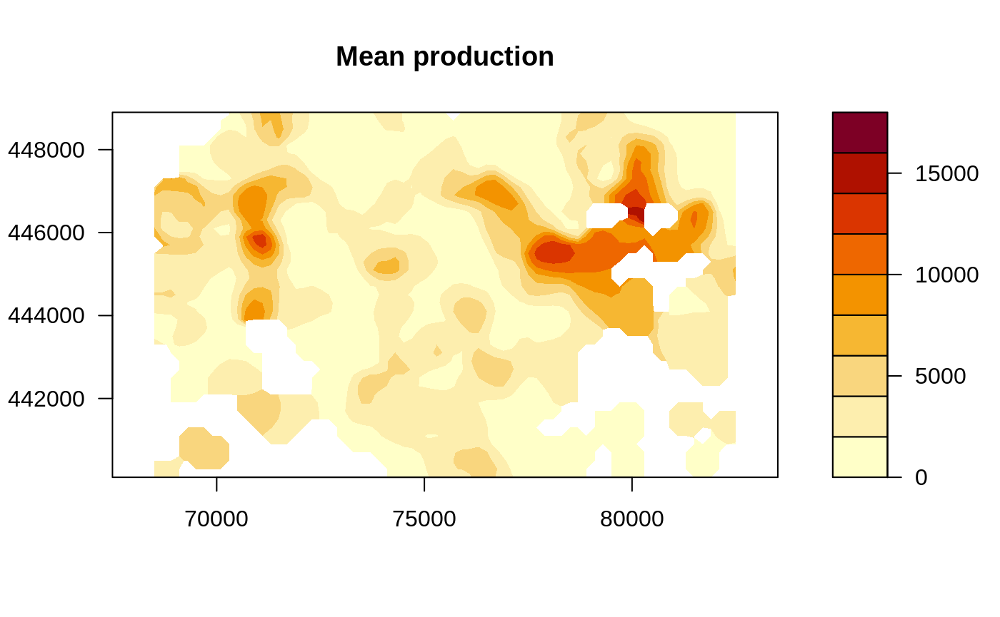
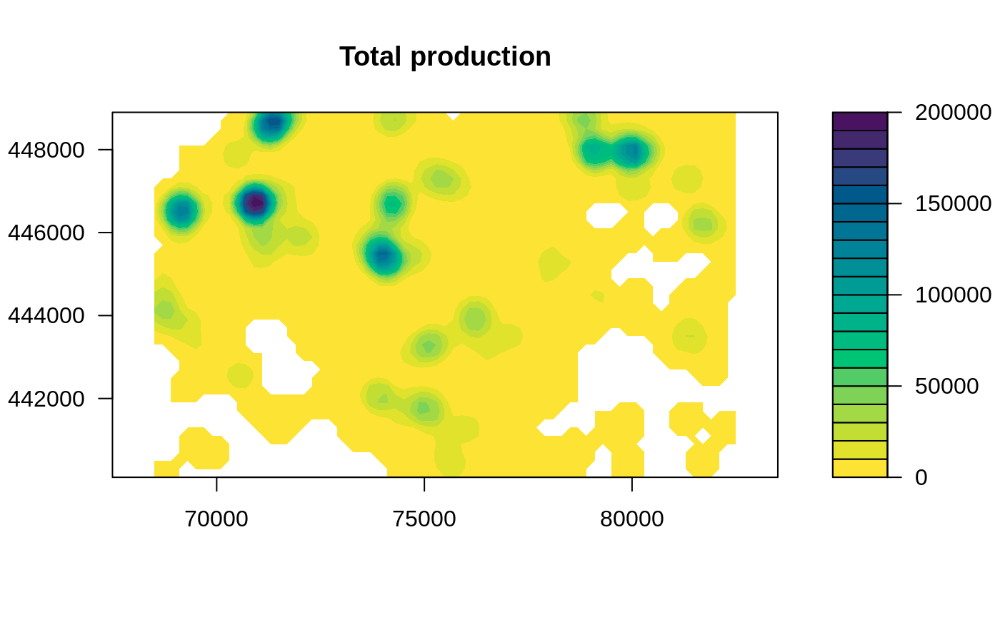
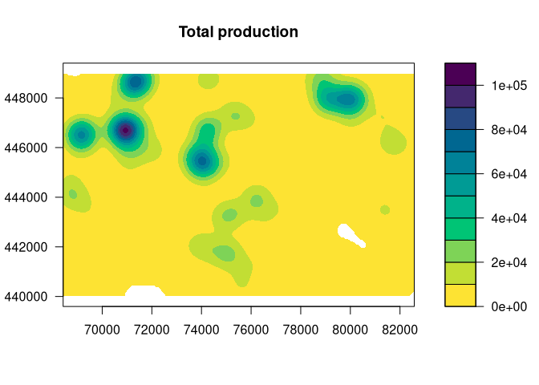

Publishing a raster density map can reveal sensitive values. sdcSpatial is an opensource R package for creating spatial density (raster) maps from point data while protecting the privacy of individual observations.
sdcSpatial offers a sdc_raster class that allows to:
- find out which locations are considered sensitive / unsafe for publishing:
plot_sensitive,is_sensitive,sensitivity_score. - apply protection methods that reduce sensitiviy and enhance spatial patterns:
protect_smooth,protect_quadtree. - remove sensitive locations:
remove_sensitive. - extract relative as well as absolute density
rasters that can be used with visualisation packages, such astmapandleaflet:x$value$mean,x$value$sum,mean,sum.
Installation
install.packages("sdcSpatial")To install the current development version of sdcSpatial with devtools
remotes::install_github("edwindj/sdcSpatial")Example
library(sdcSpatial)
library(raster)
#> Loading required package: sp
data(enterprises)
# create a sdc_raster from point data with raster with
# a resolution of 200m
production <- sdc_raster(enterprises, variable = "production"
, r = 200, min_count = 3)
print(production)
#> numeric sdc_raster object:
#> resolution: 200 200 , max_risk: 0.95 , min_count: 3
#> mean sensitivity score [0,1]: 0.6328234
# plot the raster
zlim <- c(0, 3e4)
# show which raster cells are sensitive
plot(production, zlim=zlim)
# but we can also retrieve directly the raster
sensitive <- is_sensitive(production, min_count = 3)
plot(sensitive, col = c('white', 'red'))
# what is the sensitivy fraction?
sensitivity_score(production)
#> [1] 0.6328234
# or equally
cellStats(sensitive, mean)
#> [1] 0.6328234
# let's smooth to reduce the sensitivity
smoothed <- protect_smooth(production, bw = 400)
plot(smoothed)
# let's smooth to reduce the sensitivity, with higher resolution
smoothed <- protect_smooth(production, bw = 400, fact=4, keep_resolution=FALSE)
plot(smoothed)
# what is the sensitivy fraction?
sensitivity_score(smoothed)
#> [1] 0.007962441
# let's remove the sensitive data.
smoothed_safe <- remove_sensitive(smoothed, min_count = 3)
plot(smoothed_safe)
# let's communicate!
production_mean <- mean(smoothed_safe)
production_total <- sum(smoothed_safe)
# and create a contour plot
raster::filledContour(production_mean, nlevels = 6, main = "Mean production")
# generated with R 3.6 >=
#col <- hcl.colors(11, rev=TRUE)
col <- c("#FDE333", "#C2DE34", "#7ED357", "#00C475", "#00B28A", "#009B95"
, "#008298", "#006791", "#274983", "#44286E", "#4B0055"
)
raster::filledContour(production_total, nlevels = 11
, col = col
, main="Total production")